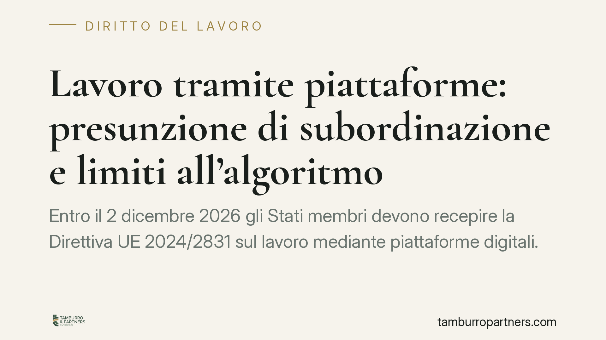

Lavoro tramite piattaforme: presunzione di subordinazione e limiti all'algoritmo
Entro il 2 dicembre 2026 gli Stati membri devono recepire la Direttiva UE 2024/2831 sul lavoro mediante piattaforme digitali. Il provvedimento introduce una presunzione legale di rapporto di lavoro e obbliga a mantenere un controllo umano sulle decisioni algoritmiche. Un cambiamento che tocca rider, tassonomia dei contratti e sistemi di gestione automatizzata del personale.

Il fatto
L'Unione europea ha adottato la Direttiva (UE) 2024/2831 del Parlamento europeo e del Consiglio del 23 ottobre 2024, relativa al miglioramento delle condizioni di lavoro nel lavoro mediante piattaforme digitali. Il testo fissa al 2 dicembre 2026 il termine ultimo entro cui gli Stati membri devono recepirla nei rispettivi ordinamenti.
È importante una precisazione. Il 2 dicembre 2026 non è la data di entrata in vigore di un decreto italiano già in essere: è la scadenza europea per l'adeguamento nazionale. Alla data di redazione di questo contributo il legislatore italiano non ha ancora pubblicato il decreto di recepimento definitivo. Ragioniamo quindi sul contenuto della direttiva e sugli obblighi che essa impone, che l'Italia dovrà tradurre in norma interna.
Inquadramento normativo
La direttiva interviene su due fronti.
Il primo è la presunzione legale di rapporto di lavoro. Quando emergono elementi che indicano un controllo e una direzione da parte della piattaforma, il rapporto si presume subordinato. Non si tratta di un richiamo automatico all'art. 2094 c.c.: la direttiva costruisce una nozione autonoma, che il decreto italiano dovrà raccordare con le categorie del nostro diritto del lavoro.
Gli indici di controllo che possono far scattare la presunzione riguardano, tra l'altro: la determinazione o i limiti al livello della retribuzione; l'obbligo di rispettare regole specifiche su aspetto, condotta verso il cliente o esecuzione della prestazione; la supervisione dell'attività, anche con mezzi elettronici; la limitazione della libertà di organizzare il lavoro, in particolare la scelta degli orari o dei periodi di assenza; la restrizione della possibilità di costruire una propria clientela o di lavorare per terzi.
L'effetto giuridico centrale è l'inversione dell'onere della prova. Oggi, in molti contenziosi, è il lavoratore a dover dimostrare la natura subordinata del rapporto. Con la presunzione, spetterà alla piattaforma provare l'assenza di subordinazione. Un ribaltamento che sposta in modo significativo l'equilibrio processuale.
Il secondo fronte è la gestione algoritmica. La direttiva impone trasparenza sui sistemi automatizzati che incidono su assegnazione dei turni, valutazione, sospensione o esclusione del lavoratore. Soprattutto, richiede una supervisione umana effettiva: le decisioni che pesano in modo rilevante sul rapporto non possono essere lasciate al solo algoritmo. Deve esistere un intervento umano reale, non meramente formale, capace di verificare e, se necessario, correggere l'esito automatico.
Implicazioni pratiche
Per le piattaforme il tema non è solo il costo del lavoro subordinato. È la necessità di rivedere l'architettura dei sistemi di gestione: chi decide, con quali criteri, con quale possibilità di controllo umano. Modelli di ingaggio finora qualificati come autonomi andranno riesaminati alla luce degli indici di controllo.
Le sanzioni saranno definite dal legislatore nazionale in sede di recepimento: la direttiva richiede misure effettive, proporzionate e dissuasive, ma l'entità concreta dipenderà dal decreto italiano, oggi non ancora disponibile. Eventuali importi che circolano nel dibattito vanno considerati indicativi finché il testo non è pubblicato.
Per i lavoratori il quadro migliora sul piano probatorio. Chi ritiene di operare in condizioni di subordinazione di fatto potrà contare su una presunzione a proprio favore, con l'onere della prova contraria a carico della piattaforma. Restano centrali la documentazione dell'attività e la ricostruzione delle modalità concrete di lavoro.
Cosa fare in concreto
Per le piattaforme:
- Mappate i sistemi automatizzati in uso e individuate le decisioni che incidono su turni, valutazioni e sospensioni.
- Verificate la presenza di un presidio umano reale sulle decisioni algoritmiche rilevanti, documentandone il funzionamento.
- Riesaminate i contratti di collaborazione alla luce degli indici di controllo previsti dalla direttiva.
Per i lavoratori:
- Conservate prove concrete delle modalità operative: turni imposti, penalità, criteri di assegnazione degli ordini.
- Annotate ogni vincolo su orari, tariffe e libertà di rifiutare la prestazione.
È opportuno, in entrambi i casi, avviare per tempo una valutazione della posizione: il recepimento è atteso entro dicembre 2026 e l'adeguamento organizzativo richiede mesi.
Disclaimer
Contributo informativo a cura di Tamburro & Partners - Avv. Giuseppe Tamburro. Non costituisce parere legale.
Ogni storia di lavoro ha i suoi tempi.
Se gestisci HR e vuoi un confronto su contenzioso, ispezioni o licenziamenti, scrivi allo studio. Ti rispondiamo entro un giorno lavorativo.